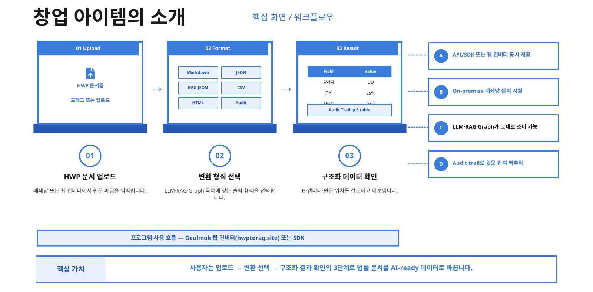
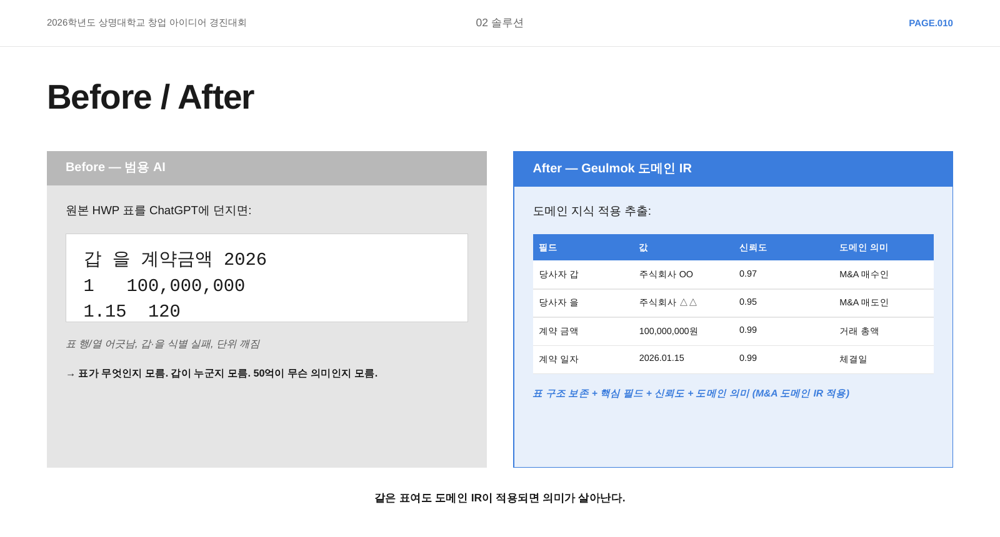
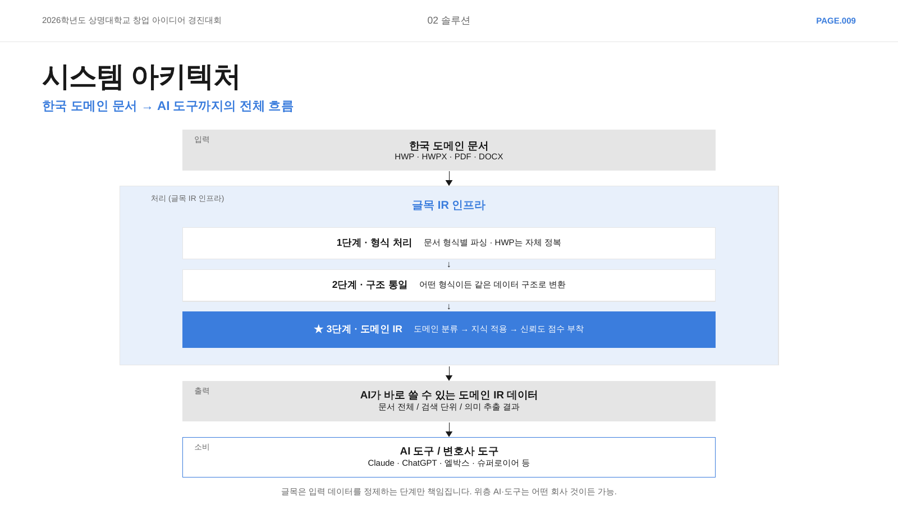

01상황과 역할
HWPtoRAG(글목)는 한글(HWP) 문서를 AI가 바로 읽을 수 있는 형태로 바꾸는 엔진과 변환 서비스입니다. RAG는 문서를 검색해 AI 답변의 근거로 붙이는 방식입니다. 공공, 법률, 학술 분야에는 HWP로 작성된 문서가 많습니다. 그런데 Unstructured.io, Azure Document Intelligence 같은 AI 문서 처리 도구는 HWP를 받지 않습니다. 그래서 HWP 문서를 RAG에 넣으려면 대개 PDF나 이미지로 바꾼 뒤 다시 읽어야 했습니다. 이 중간 변환을 없애는 것이 목표였습니다.
웹에서 파일을 끌어다 놓으면 Markdown, JSON, Plain Text, RAG-JSON, CSV, HTML 중 고른 형식으로 바꿔 줬습니다. 비로그인으로 하루 5회, 최대 100MB 파일까지 쓸 수 있게 했습니다. 개발자용으로 Python 패키지와 REST API도 만들었습니다.
대상 사용자는 넷입니다.
- 학위 논문을 Markdown으로 옮기려는 대학원생과 연구자
- 판결문과 계약서를 구조화하려는 리걸테크
- RAG 파이프라인에 HWP를 넣으려는 AI 스타트업
- 행정 문서를 디지털로 옮기려는 공공기관

해결하려던 문제
- PDF나 이미지로 바꾸면 병합 셀과 머리글-값 관계가 사라집니다.
- 법률 문서는 당사자, 금액, 기간이 표 안에 들어 있습니다. 표가 깨지면 검색과 요약이 틀립니다.
- LangChain용으로 공개된 기존 HWP 로더는 pyhwp로 텍스트만 뽑아서 표 구조가 사라졌습니다.
- 법무 쪽 사용자는 문서를 외부 서버로 보내기 어렵습니다.

왜 바이너리를 직접 읽었나
HWP 5.0 파일 안에는 표 셀마다 행과 열 좌표, 병합 크기가 이미 저장돼 있습니다. 이 값을 읽으면 표 모양을 추론할 필요가 없습니다. 모델로 추론하면 GPU나 외부 API가 필요합니다. 이는 폐쇄망 요구와 맞지 않았습니다. 그래서 CPU만으로 동작하는 엔진을 직접 만들기로 했습니다.
과제와 역할
- 팀 목표 1 (2026.02): HWP를 직접 읽는 엔진과 웹 변환기를 만들고, 개발자용 API와 Python 패키지를 만든다.
- 팀 목표 2 (2026.03 – 05): 같은 엔진 위에 법률 문서의 당사자, 금액, 기간을 찾는 법률 문서 처리층을 얹고 창업아이디어경진대회에 나간다.
- 맡은 일
- 대표, 개발 총괄. 엔진, 변환 서버, SaaS API, Python 바인딩, 평가 도구를 직접 설계하고 개발했습니다. 웹 화면 중 출력 형식 선택, 변환 이력, 일괄 변환, 서버 API 연동도 맡았습니다.
- 팀원 (사업)
- 사업계획, 수익 모델, 시장 조사, 발표 일부를 맡았습니다.
- 팀원 (UX, 프런트엔드)
- 웹 화면 초기 구현(랜딩, 업로드와 변환 화면, 파일 검사와 분할 업로드, 요금, Google 로그인)과 협업 편집 화면 일부를 맡았습니다. 검수 샘플을 한글 원본과 대조하는 일도 맡았습니다.
- 자문 교수
- 검증과 보안 자문, 특허 공동 발명.
- 기반 코드
- HWP 5.0과 HWPX를 읽어 들이는 부분은 오픈소스 Rust 크레이트 hwpers(MIT/Apache-2.0)를 기반으로 했습니다. 그 위에서 레코드 트리, 표 복원, 출력기를 직접 만들었습니다.
02해결 과정
1. 아키텍처

- 웹 변환기 (Next.js, Vercel): 확장자와 파일 서명을 검사하고, 5MB 조각으로 나눠 변환 서버로 직접 올립니다. 초기 화면과 업로드 코드는 팀원이 만들었습니다.
- 변환 서버 (NestJS, Docker, Railway): 조각을 이어 붙이고 Rust 엔진을 CLI로 실행합니다. 사용량 제한과 결과 삭제도 맡습니다.
- 저장소 (Supabase): 변환 상태는 PostgreSQL, 로그인은 Google 인증, 큰 결과와 추출 이미지는 Storage에 둡니다.
- SaaS API (FastAPI): 문서 읽기, 청크 분할, 임베딩, 벡터 DB 저장을 한 번에 처리합니다. 벡터 DB는 Qdrant, Pinecone, Weaviate, Milvus 중 고릅니다.
- 엔진 (Rust): HWP 5.0, HWPX, HWPML을 판별하고 표를 복원해 중간 표현을 만듭니다. 출력기는 JSON, Markdown, Plain Text, RAG-JSON, CSV, HTML, HWPX 7가지입니다.
- Python 바인딩 (PyO3): SaaS API와 LangChain 로더가 엔진을 직접 호출합니다.
- 평가 도구: 표 구조 지표(TEDS-S, Table F1)를 계산하고, 원본 대조용 검수 샘플을 뽑습니다. TEDS-S는 표 구조가, Table F1은 셀이 기준 표와 얼마나 같은지 재는 값입니다.
2. 주요 흐름
흐름 1. 웹에서 HWP 한 건을 바꿀 때
- 브라우저가 확장자와 파일 서명을 확인합니다. 100MB를 넘으면 막습니다.
- 업로드 세션을 열고 파일을 5MB 조각으로 보냅니다.
- 서버는 빠진 조각이 있으면 누락 번호를 돌려줍니다. 다 모이면 스트림으로 이어 붙입니다.
- 대기열에서 빈자리를 기다린 뒤 Rust CLI를 실행합니다. 60초를 넘으면 중단합니다.
- 결과가 1MB 미만이면 DB에, 넘으면 Storage에 저장합니다.
- 화면은 상태를 조회해 결과를 보여 줍니다. 1시간이 지난 결과는 매시간 실행되는 정리 작업이 지웁니다.
흐름 2. 엔진 안에서 표를 복원할 때
- 섹션 레코드를 level 값(계층 깊이)으로 묶어 트리를 만듭니다.
- 표를 만나면 셀 헤더에서 행, 열, 병합 크기를 읽습니다.
- 셀을 좌표에 놓고, 병합으로 덮인 칸을 표시하고, 남은 칸은 누락으로 둡니다.
- 첫 행이 머리글인지는 굵기, 배경색, 머리글 단어 같은 6개 신호의 점수로 정합니다.
- 표 유형(데이터 표, 키-값 표, 배치용 표)과 신뢰도를 붙입니다.
- 표 안의 표는 같은 과정을 반복합니다. 깊이는 5단계까지입니다.
흐름 3. API로 벡터 DB까지 넣을 때
- 컬렉션 이름을 임베딩처럼 오래 걸리는 처리 전에 검사합니다.
- HWP는 PyO3 엔진, DOCX와 PDF는 Python 라이브러리로 읽습니다.
- 표가 든 청크는 크기 제한을 넘어도 자르지 않습니다.
- 임베딩 후 고른 벡터 DB에 넣고 단계별 소요 시간을 돌려줍니다.
3. 설계 고민과 결정
셀 위치를 어떻게 정할 것인가
- 고민: 셀이 나오는 순서와 열 수로 위치를 계산하면 병합 셀에서 한 칸씩 밀립니다.
- 선택지: 순서로 계산하기, 파일에 저장된 좌표 읽기.
- 결정: 좌표를 그대로 읽었습니다. 값이 이미 있는데 계산할 이유가 없었습니다. 모든 칸이 내용, 빈칸, 병합, 누락 중 하나로 정해집니다.
어떤 형식을 기본 출력으로 둘 것인가
- 고민: LLM은 Markdown을 잘 읽지만, Markdown 표는 병합 셀을 표현하지 못합니다.
- 선택지: Markdown 하나로 통일, JSON 기본에 Markdown 보조.
- 결정: JSON에 머리글, 행, 병합 정보를 모두 담았습니다. Markdown 표 밑에는 병합 정보를 주석으로 붙였습니다.
RAG 청크를 어디서 자를 것인가
- 고민: 글자 수로 자르면 표의 머리글과 값이 다른 청크로 갈립니다.
- 선택지: 고정 길이 분할, 구조 기준 분할.
- 결정: 표는 한 청크로 두고, 청크마다 제목 경로를 붙였습니다. 출력은 한 줄에 청크 하나인 JSONL로 썼습니다. 결과 전체를 하나의 문자열로 만들지 않고 줄 단위로 쓰고 읽을 수 있게 했습니다.
웹 서버와 엔진을 어떻게 이을 것인가
- 고민: Node 네이티브 애드온은 빌드 부담이 크고, 엔진을 따로 띄우면 인프라 비용이 듭니다.
- 선택지: 네이티브 애드온, 별도 서비스, CLI 실행.
- 결정: 변환 서버가 엔진을 CLI로 실행하는 방식을 골랐습니다. 큰 파일이 몰리면 메모리가 넘칠 수 있어 동시 실행을 3개로 제한했습니다. 한 건당 60초 제한도 걸었습니다.
법률 문서의 의미를 무엇으로 붙일 것인가 (2026.05)
- 고민: 당사자와 금액을 LLM으로 뽑으면 환각 위험과 외부 API 비용이 생깁니다.
- 선택지: LLM 추출, 규칙 추출.
- 결정: 규칙으로 만들었습니다. 분류 신뢰도가 기준에 못 미치면 상위 분류로 대체하게 했습니다.
4. 구현 상세
Rust 엔진과 CLI
- 변환 서버가 오류를 처리할 수 있도록 CLI가 실패 원인을 JSON으로 출력하게 했습니다.
- 큰 출력은 64KB 버퍼를 거쳐 파일에 바로 썼습니다.
- 수식은 HWP 수식 문법을 따로 해석했습니다.
배포와 Python 연결
- Docker 이미지 하나에 Rust 정적 바이너리와 NestJS를 넣었습니다. root가 아닌 사용자 권한으로 실행했습니다.
- Railway에는 배포 때 /api/health로 상태를 확인하게 했습니다. 프로세스가 비정상 종료하면 최대 5회 다시 띄우게 했습니다.
- Python에서는 PyO3 바인딩으로 파일 경로 대신 바이트를 바로 넘길 수 있게 했습니다.
평가 도구
- 국가법령정보센터의 법령 별표와 서식 HWP를 모으는 수집기를 만들었습니다. 중복 파일과 개인정보 패턴을 걸렀습니다.
- 표가 있는 파일 28,851개에서 표 크기와 병합 밀도로 나눠 검수 샘플 186건을 뽑았습니다.
- 검수자가 한글 프로그램에서 원본을 열고 결과를 Perfect, Minor, Partial, Fail로 판정하게 했습니다.
03결과
- 상명대학교 2026학년도 창업아이디어경진대회에서 최우수상을 공동 수상했습니다. (2026.05)
- 표 구조를 보존하는 중간 표현 생성 방법을 자문 교수와 함께 특허 출원했습니다. (2026.03)
- 웹 변환기(hwptorag.site)와 변환 서버를 배포해 누구나 쓸 수 있게 공개했습니다. 2026년 10월 현재 변환 서버는 중단된 상태입니다.
- 엔진은 HWP 5.0, HWPX, HWPML을 읽고 7가지 형식으로 낼 수 있었습니다. 웹에서는 그중 6가지를 고를 수 있었습니다.
- 법령 별표와 서식 HWP 38,652건을 읽지 못한 파일 없이 처리했습니다. 표는 약 33,000개였습니다. (자체 측정, 2026.03)
- 원본 대조 검수 60건 중 56건이 완전히 일치했습니다. (팀원 검수, 2026.03)
- 2026년 5월에는 M&A 계약서의 당사자, 금액, 기간을 찾는 법률 문서 처리층을 만들었습니다.
04트러블슈팅
실제 HWP 파일에서 표가 잡히지 않았습니다
- 문제
- 라이브러리로 만든 테스트 파일에서는 표가 잡혔습니다. 실제 파일에서는 표와 문단이 빠졌습니다.
- 원인
- 레코드 종류를 나타내는 태그 번호가 기반 라이브러리(hwpers)와 공식 명세에서 달랐습니다. 실제 파일은 공식 명세를 따랐습니다. 테스트 파일은 같은 라이브러리로 만들어서 테스트에서는 문제가 드러나지 않았습니다. 엔진은 표 레코드가 층층이 중첩돼 있다고 가정했는데, 실제 파일에서는 같은 level에 나란히 놓여 있었습니다.
- 해결
- 명세 번호로 된 태그를 라이브러리 번호로 바꿔 읽게 했습니다. 나란히 놓인 레코드에서는 셀 헤더가 나올 때마다 새 셀을 열어 트리를 다시 세웠습니다.
- 결과
- 실제 HWP 파일로 통합 테스트를 추가했습니다.
- 남긴 규칙
- 라이브러리 상수와 그 라이브러리로 만든 테스트 파일은 공식 명세와 실제 파일로 다시 확인해야 합니다.
"정확도 100%"가 실제 정확도가 아니었습니다
- 문제
- 초기 보고서의 머리글 F1(머리글 행 판정 정확도)이 100%였습니다. 38,652건 전수 평가의 TEDS-S도 1.0이었습니다.
- 원인
- 머리글 F1은 머리글이 없는 문서로 잰 값이었습니다. 전수 평가는 엔진 출력끼리 비교한 내부 일관성 값이었습니다.
- 해결
- 원본과 대조하려고 검수 샘플 186건과 검수 도구를 만들었습니다.
- 결과
- 팀원이 검수 도구로 60건을 원본과 대조했습니다. 56건은 완전히 일치했습니다. 4건은 숫자 특수문자가 한자로 깨지거나 띄어쓰기가 빠졌습니다. 숫자 특수문자 문제는 엔진을 고쳤습니다(다음 사례).
- 남긴 규칙
- 지표는 무엇과 무엇을 비교한 값인지 먼저 확인해야 합니다.
숫자 특수문자 자리에 뜻 없는 한자가 나왔습니다
- 문제
- ①, ② 같은 숫자 특수문자 자리에 뜻 없는 한자(灳瑣)가 나왔습니다. 파일 내부 경로도 텍스트로 섞였습니다. 팀원이 원본 대조 검수에서 찾았습니다.
- 원인
- 처음에는 직인 이미지 자리에 남은 글자로 보고, 평가 스크립트에서 HWP 전용 기호 코드와 함께 지웠습니다. 검수에서 숫자 특수문자 자리에 한자가 나온 것을 보고 엔진을 다시 봤습니다. 글자 겹침 같은 확장 제어 문자는 문단 텍스트에서 8칸을 차지합니다. 엔진의 제어 문자 분류표는 이를 1칸으로 읽었습니다. 그래서 나머지 칸에 든 제어 이름이 한자로 출력됐습니다.
- 해결
- 분류표를 고쳐 8칸을 건너뛰게 했습니다. 원문자 숫자는 제어 코드에 담긴 번호로 되살렸습니다. 파일 내부 경로와 제어 문자만 있는 줄은 걸렀습니다.
- 결과
- 같은 제어 문자를 넣은 회귀 테스트를 엔진에 추가했습니다.
- 남긴 규칙
- 깨진 글자를 출력 뒤에서 지우기 전에, 엔진이 그 글자를 왜 만들었는지 먼저 확인해야 합니다.
05배운 점
라이브러리로 직접 만든 테스트 파일만 믿으면 안 된다는 것을, 실제 파일에서 표가 통째로 빠지는 일로 알았습니다. 같은 이름의 지표도 무엇과 비교했는지에 따라 뜻이 다릅니다. 그래서 내부 일관성 값과 원본 대조 값을 나눠 적었습니다.